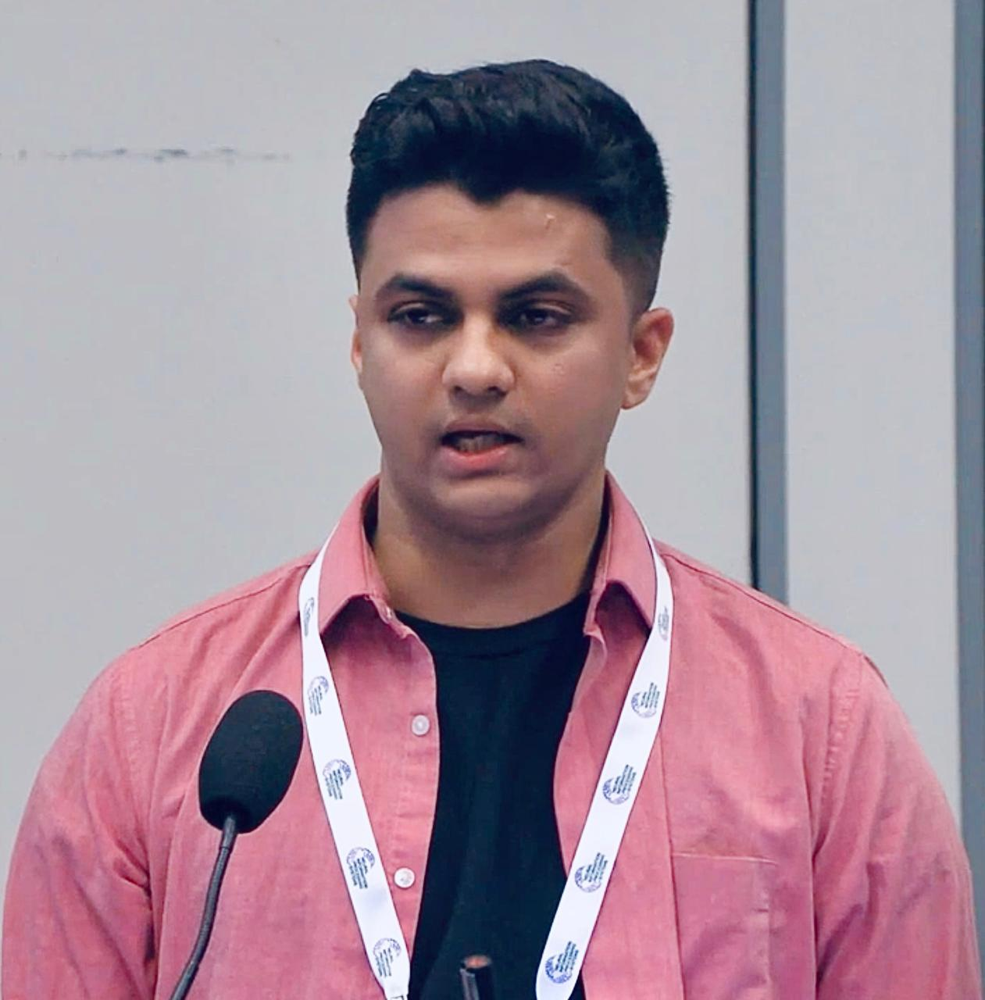
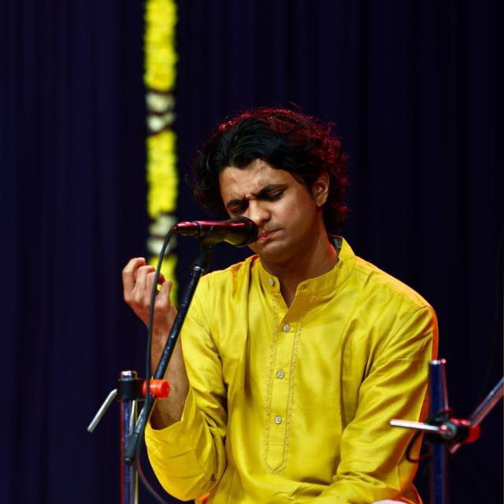

I am a Student Researcher at Google Cloud AI Research in the San Francisco Bay Area, and a third-year PhD student at MILA-Quebec AI Institute and Université de Montréal advised by Irina Rish and Alexandre Drouin.
My research interests are in time series forecasting, specifically in building flexible models. Some of my notable contributions include making transformer architectures faster and better for forecasting tasks (TACTiS-2), building some of the early foundation models in this space (Lag-Llama), developing methods and benchmarks for textual-context aided forecasting (CiK, Beyond DP), and building post-training data pipelines to adapt LLMs for multimodal forecasting.
Prior to Google, I spent three years at ServiceNow Research in Montreal, where I worked on forecasting research published at top-tier venues. Earlier, I interned at IBM Research and dubverse.ai during my undergraduate studies.
To shape the evolving discourse around foundation models for forecasting, I led the organization of a successful first edition of the Time Series in the Age of Large Models workshop at NeurIPS 2024 (1000+ attendees), with a second edition now to be organized at ICLR 2026.
I also consult for startups and advise students on forecasting research. Reach out if either applies.
My email address is arjun.ashok.psg [at] gmail [dot] com.

This is likely not up-to-date. I tend to post updates more often on LinkedIn these days.
| Feb '26 | Started as a Student Researcher at Google Cloud AI Research in the San Francisco Bay Area. |
| Jan '26 | Co-organizing the Time Series in the Age of Large Models workshop at ICLR 2026 - second edition overall, first time at ICLR. |
| Aug '25 | One paper out on arXiv, on strategies for improved zero-shot context-aided forecasting with LLMs. |
| May '25 | Context is Key is accepted for publication at ICML 2025. Another paper accepted at the workshop on Foundation Models for Structured Data. |
| Dec '24 | Co-organized The first NeurIPS workshop on Time Series in the Age of Large Models at NeurIPS 2024 in Vancouver, Canada, with 1000+ attendees. Checkout all the papers and talks from the workshop here. |
| Oct-Nov '24 | Paper on natural-language based context-aware forecasting, Context is Key: A Benchmark for Forecasting with Essential Textual Information, is out on arXiv. Gave an oral presentation at the FM4TS Workshop at ACM ICAIF 2024, New York, USA. |
| July '24 | Gave an invited talk on Natural Language based Context-Aware Forecasting at the International Symposium on Forecasting (ISF) 2024. |
| May '24 | Presented TACTiS-2 at ICLR 2024. TACTiS-2 is a highly flexible model for multivariate probabilistic time series prediction tasks. Check out the tweet thread and poster here! |
| Feb '24 | The full version of Lag-Llama released with open-source model checkpoints! Check the announcement here! |
| Jan '24 | I gave a talk on our efforts Towards General-Purpose Models for Time-Series Prediction at the Winter 2024 Montreal Time Series Meetup. |
| Jan '24 | TACTiS-2 accepted at ICLR 2024! |
| Dec '23 | I gave a talk on Building Foundation Models for Time Series Data at the 6th workshop on Neural Scaling Laws co-located with NeurIPS 2023. |
| Oct '23 | TACTiS-2 is out on arXiv. |
| Oct '23 | A preliminary version of Lag-Llama is out on arXiv. |
| Jan '23 | One paper on out-of-distribution detection accepted to ICLR 2023. This is work in collaboration with folks at ML Collective mentored by Rosanne Liu. |
| Jan '23 | Started as a Visiting Researcher (Full-Time) at ServiceNow Research, Montreal. Excited to continue working on problems in time series representation learning! |
| Aug '22 | Preliminary work on self-supervised learning objectives for weather time series accepted at the AAAI 2022 Fall Symposium on Climate Change. |
| Jul '22 | One paper on Class-Incremental Learning accepted as a full paper at ECCV 2022. |
| Jun '22 | Started as a Research Intern at IBM Research, India. I'll be working on building self-supervised learning objectives and pre-trained models for geospatial weather time series. |
| Jun '22 | One paper on cross-task generalization in NLP submitted to EMNLP 2022 (Update: Accepted). |
| Apr '22 | One paper on Class-Incremental Learning accepted at the CLVISION Workshop at CVPR 2022 as a non-archival paper (Update: Accepted at ECCV 2022). |
| Apr '22 | One reproducibility report on Self-Supervision and Few-shot Learning accepted at the ML Reproducibility Challenge 2021 (Fall Edition) and published at ReScience-C. |
| Oct '21 | One paper on out-of-distribution generalization accepted as AAAI 2022 as a student abstract. |
| Jun '21 | Started as a Research Assistant at IIT Hyderabad under Prof. Vineeth Balasubramanian. |
| On the side, I am a Carnatic Musician. I have performed Carnatic concerts in multiple venues in India, Canada and the US regularly. Here is a recording of a concert of mine from Dec 2025. I'm also a hybrid athelete (I enjoy running, biking and working out), and enjoy reading non-fiction. |
 |